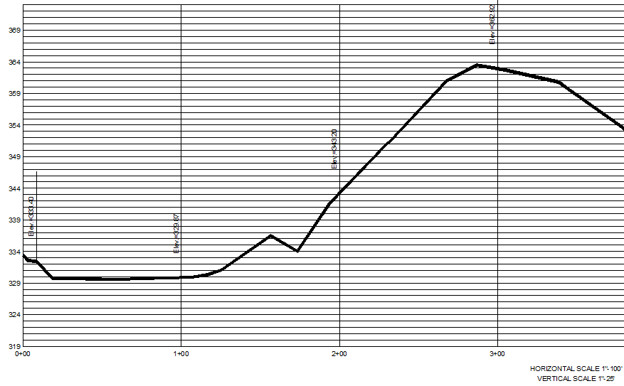
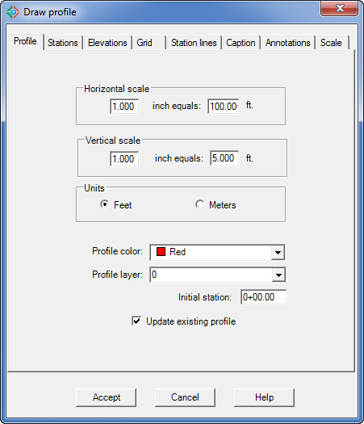
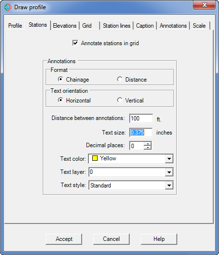
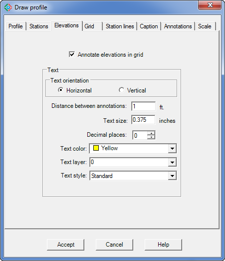
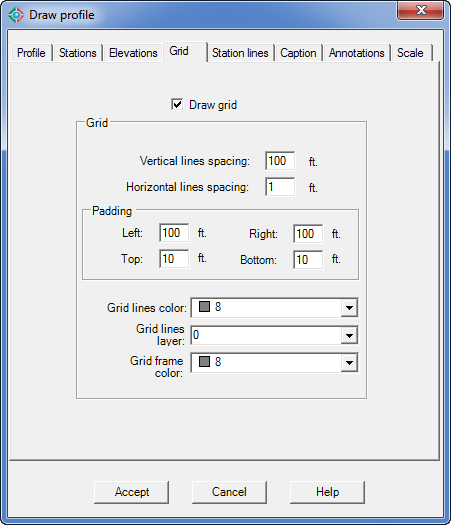
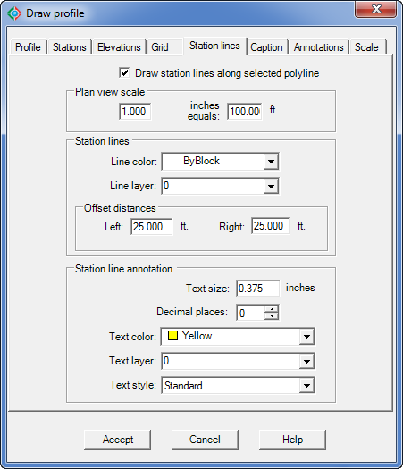
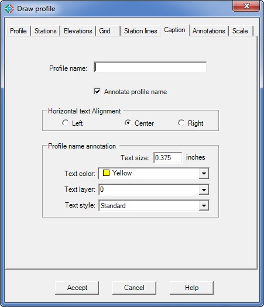
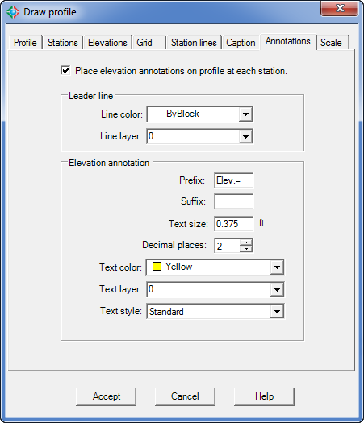
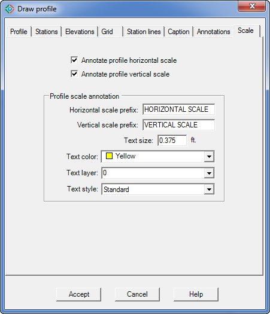

|
|
Toolbar:
Menu: CAD-Earth > Mesh commands > Draw profile from mesh.
|
|
|
Command line: CE_PROFILE
Prompts:
Select triangulation mesh: Select polyline inside mesh:
CAD-Earth version: Plus, Premium. |
.png)
.png)
Command description:
After a terrain mesh is imported to AutoCAD, a polyline can be drawn to indicate a path where a profile will be extracted. Using this CAD-Earth command, station lines with chainage annotations will be inserted along the polyline, and the corresponding profile drawing will be created, complete with elevation, station and scale annotations. The user can specify the color, layer, text style, size and placement for each profile element.

Profile drawing example
Dialog box settings (Profile tab):

Draw profile from mesh dialog box (Profile tab)
ØHorizontal scale. Will be used to convert station line annotation text size from the units selected (feet or meters) to drawing units. Typical values are 1"-100' (1 inch equals 100 feet) to 1"- 500' (1 inch equals 500 feet) for feet units and 1:500 (1 meter equals 500 meters) and 1:5000 (1 meter equals 5000 meters) for units in meters.
ØVertical scale. Typical values are 1"-5' (1 inch equals 5 feet) to 1"-10' (1 inch equals 10 feet) for feet units and 1:25 (1 meter equals 25 meters) and 1:50 (1 meter equals 50 meters) for units in meters.
ØUnits. Measurements can be in feet or meters. The units must correspond with the units used when the corresponding terrain mesh was created.
ØProfile color. The color selected will be used to draw the polyline representing the profile.
ØProfile layer. The polyline representing the profile will be drawn in the layer selected.
ØInitial station. Profile chainage will begin at this value.
ØUpdate existing profile. If a previous section profile was created by processing the selected polyline, it will be updated reflecting the new values.
Dialog box settings (Stations tab):

Draw profile from mesh dialog box (Stations tab)
ØAnnotate stations in grid. Chainage annotations will be placed at the bottom of the profile grid.
ØAnnotations.
ØFormat.
•Chainage. For feet units, station annotations will have the format 0+00.00 (the annotation of 100 feet is written as 1+00 and 1000 feet will be written as 10+00..etc.). For meter units, station annotations will have the format 0+000 (e.g.: the annotation of 1000 meters will be written as 1+000 and 100 meters will be 0+100).
•Distance. Station annotations will be the distance rounded to the decimal places specified.
•Text orientation. Stations annotations can be placed horizontally or vertically at the bottom of the profile grid.
•Distance between annotations. Station annotations will be placed at the bottom of the profile grid at intervals equal to the distance specified.
•Text size. Height for station annotations according to the units selected (inches or millimeters).
•Decimal places. Number of digits displayed to the right of the decimal point for station annotations.
•Text color. Station annotations will be created using the selected color.
•Text layer. Stations annotations will be created in the layer selected.
•Text style. The text style selected will be used for station annotations.
Dialog box settings (Elevations tab):

Draw profile from mesh dialog box (Elevations tab)
ØAnnotate elevations in grid. Elevation annotations will be placed at the left side of the profile grid.
ØText.
•Text orientation. Elevation annotations can be placed horizontally or vertically at the left side of the profile grid.
•Distance between annotations. Elevation annotations will be placed at intervals equal to the distance indicated at the left side of the profile grid.
•Text size. Height for elevation annotations.
•Decimal places. Number of digits displayed to the right of the decimal point for elevation annotations.
•Text color. The selected color will be used for elevation annotations text.
•Text layer. Elevation annotations will be created in the layer selected.
•Text style. The selected text style will be used for elevation annotations.
Dialog box settings (Grid tab):

Draw profile from mesh dialog box (Grid tab)
ØDraw grid. Select this option to draw horizontal and vertical lines as reference covering the profile drawing.
ØGrid.
•Vertical lines spacing. The interval distance between each grid vertical line. Value must be of integer type.
•Horizontal lines spacing. The interval distance between each grid horizontal line. Value must be of integer type.
•Padding. Distances around the left, right, top and bottom of the profile extents. Values must be a multiple of the vertical or horizontal grid lines spacing.
•Grid lines color. The selected color will be used for grid lines.
•Grid lines layer. Profile grid lines will be created in the layer selected.
•Grid frame color. The selected color will be used for horizontal and vertical lines outlining the profile grid extents.

Draw profile from mesh dialog box (Station lines tab)
Dialog box settings (Station lines tab):
ØDraw station lines along selected polyline. Lines will be drawn perpendicular to each station point on the polyline, with an extension equal to the sum of the left and right offset distances, taking as reference the direction of chainage and at intervals equal to the separation distance indicated. Station annotations will be placed at each station line end. Station lines will serve as a position reference of each station annotated in the profile.
ØPlan view scale. Will be used to convert station line annotation text size from the units selected (feet or meters) to drawing units. Typical values are 1"-100' (1 inch equals 100 feet) to 1"- 500' (1 inch equals 500 feet) for feet units and 1:500 (1 meter equals 500 meters) and 1:5000 (1 meter equals 5000 meters) for units in meters.
ØStation lines.
•Line color. The selected color will be used for station lines placed on the polyline.
•Line layer. Station lines will be drawn in the layer selected.
•Offset distances. The length of station lines will be the sum of left and right offset distances, and they will be measured from the station point to the left or right taking as reference the view at the direction of increasing chainage.
ØStation line annotation. Station annotations will be placed at each station line end to mark the corresponding chainage.
•Text size. Height for elevation station line annotations text.
•Decimal places. Number of digits displayed to the right of the decimal point for station line annotations.
•Text color. The selected color will be used for station line annotations.
•Text layer. Station line annotations will be created in the layer selected.
•Text style. The selected text style will be used for station line annotations.
Dialog box settings (Caption tab):

Draw profile from mesh dialog box (Caption tab)
ØProfile name. Text entered will be placed at the bottom of the profile grid at the specified horizontal alignment.
ØAnnotate profile name. Check this to place the profile name at the bottom of the profile grid.
ØHorizontal text alignment. The profile name annotation can be aligned to the left, center or right at the bottom the profile grid.
ØProfile name annotation.
•Text size. Height for profile name annotation text.
•Text color. The color selected will be used for the profile name annotation.
•Text layer. Profile name annotation will be created in the layer selected.
•Text style. The selected text style will be used for the profile name annotation.
Dialog box settings (Annotations tab):

Draw profile from mesh dialog box (Annotations tab)
ØPlace elevation annotations on profile at each station. Elevation annotations will be placed on the profile at each station.
ØLeader line.
•Line color. The selected color will be used for leader lines in elevation annotations.
•Line layer. Leader lines for elevation annotations will be created in the layer selected.
ØElevation annotation.
•Prefix. This is text that will be added before each elevation annotation on the profile.
•Suffix. This is text that will be appended to the end each profile elevation annotation.
•Text size. Height for profile elevation annotations.
•Decimal places. Number of digits displayed to the right of the decimal point for profile elevation annotations.
•Text color. The selected color will be used for profile elevation annotations.
•Text layer. Elevation and offset annotations will be created in the layer selected.
•Text style. The selected text style will be used for profile elevation annotations.
Dialog box settings (Scale tab):

Draw profile from mesh dialog box (Scale tab)
ØAnnotate profile horizontal and vertical scale. An annotation indicating the horizontal and vertical scale will be placed below the profile name annotation at the bottom of the profile grid.
ØProfile scale annotation.
•Horizontal scale prefix. This is text that will be added before the profile horizontal scale annotation.
•Vertical scale prefix. This is text that will be added before the profile vertical scale annotation.
•Text color. The selected color will be used for profile horizontal and vertical scale annotations.
•Text layer. Profile horizontal and vertical scale annotations will be created in the layer selected.
•Text style. The selected text style will be used for profile horizontal and vertical scale annotations.
Tips:
•To exaggerate vertical section elevations use a value less than the horizontal scale value. e.g.: if you set the horizontal scale to 1"-10' and set the vertical scale to 1"-5' the profile elevations will be scaled by a factor of two.
•The terrain configuration in Google Earth is not as accurate as a configuration obtained by a topographic site survey. The resulting profile drawing is not recommended for projects where high accuracy is required.
•Select the 'Update existing profile' option to quickly view changes after each run.
Related topics.
•Import terrain mesh from Google Earth.
Copyright © 2023 Arqcom Software
Google Earth© is a registered trademark of Google inc. All other trademarks are the property of their respective owners.